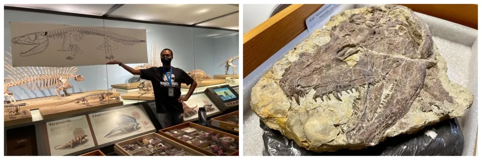

Muitas pessoas afirmam com convicção que o Tyrannosaurus rex era exclusivamente um carniceiro (como um abutre gigante) porque ele seria "lento demais" para caçar, atingindo no máximo a velocidade de uma caminhada humana rápida. Por que essa desinformação é "consistente"? Essa ideia ganhou força até entre alguns paleontólogos no passado devido a modelos biomecânicos iniciais. A lógica era: Peso excessivo: Um animal de 8 toneladas quebraria as pernas se tentasse correr. Braços curtos: Se ele tropeçasse, não conseguiria amortecer a queda e morreria.
